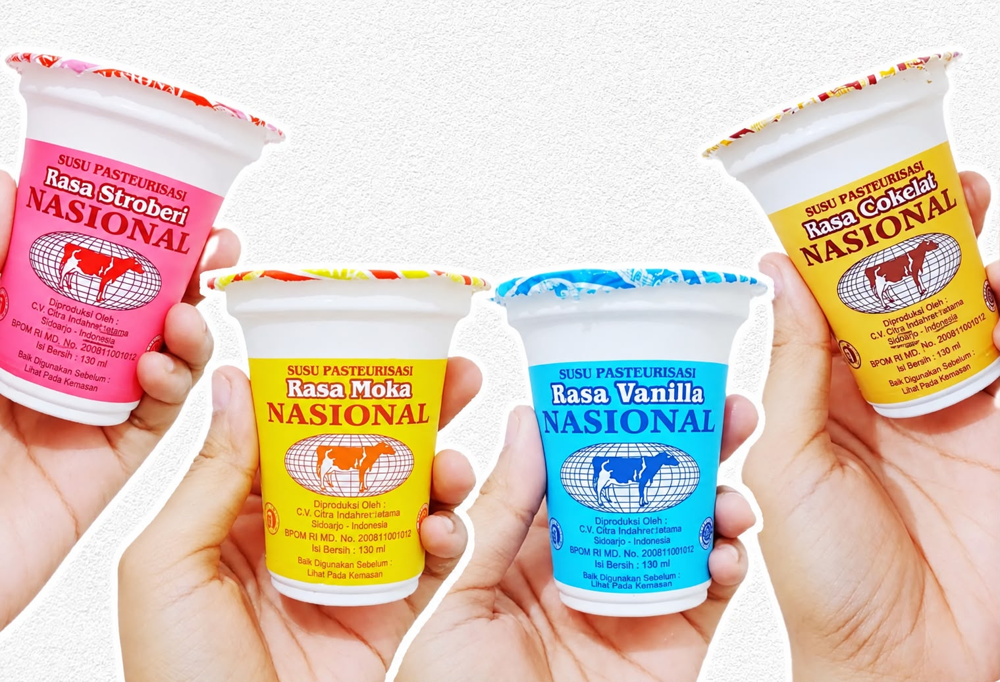

CUP
Susu Cup Pasteurisasi
Kemasan cup praktis dengan beberapa pilihan rasa, mudah dibawa ke mana saja.
 Pesan Sekarang
Pesan Sekarang
Mengenal produsen, cerita, dan proses pengolahan di balik setiap cup dan pack Susu Murni Nasional.

Susu Murni Nasional hadir sebagai pilihan susu pasteurisasi siap minum dengan berbagai varian rasa dan kemasan. Pilih sesuai selera dan kebutuhanmu, lalu nikmati dalam kondisi
dingin agar lebih segar.
Susu Murni Nasional diproduksi oleh CV Cita Nasional yang telah berdiri sejak 10 November 2000. CV Cita Nasional didirikan dengan tujuan meningkatkan kesehatan dan kesadaran
masyarakat akan hidup sehat, dengan harapan susu bergizi dapat dinikmati setiap hari
oleh semua kalangan, terutama golongan menengah ke bawah, dengan harga terjangkau.
Susu Murni Nasional adalah merek susu pasteurisasi dari CV Cita Nasional. Produknya dikenal luas sejak awal 2000-an, dan di lapangan kamu mungkin lebih sering menemuinya lewat penjual keliling atau minimarket dengan tulisan "Susu Segar Nasional".
Menjadi pelopor perusahaan susu pasteurisasi dan homogenisasi berskala nasional untuk memenuhi kebutuhan susu masyarakat.
Tersedia rasa vanila, cokelat, stroberi, moka, dan melon, dengan karakter rasa yang berbeda di setiap varian.
Berbeda dengan susu sapi mentah dari pemerahan, Susu Murni Nasional melalui pasteurisasi dan pengemasan bersegel sebelum dijual sebagai susu siap minum.
Selain susu pasteurisasi, CV Cita Nasional juga memproduksi yoghurt dengan merek Yoghurt Nasional dalam kemasan cup dan botol.
Beberapa tonggak penting dalam perjalanan CV Cita Nasional dan Susu Murni Nasional.
CV Cita Nasional didirikan pada 10 November 2000 dan diresmikan oleh Menteri Pertanian dan Perkebunan RI saat itu, Prof. Dr. Ir. Bungaran Saragih. Produksi perdana memproses susu segar dari koperasi (KUD) di sekitar lokasi pabrik.
Depot pemasaran susu pasteurisasi mulai dibuka di Purwokerto, Purworejo, Magelang, dan Temanggung.
Pemasaran diperluas ke kawasan Bandung dan Banten.
Kerja sama dengan Sekolah Vokasi UGM berjalan sejak 2022, mencakup magang mahasiswa dan penelitian.
Produk tersedia dalam berbagai varian, dan CV Cita Nasional juga melayani pengiriman susu ke sekolah untuk program MBG.
Setiap tahap dijaga agar susu tetap aman, segar, dan bernutrisi.
Susu segar dari koperasi peternak sekitar diterima dan langsung diuji di laboratorium (uji fisik dan kimia).
Susu disaring untuk memisahkan kotoran fisik, lalu didinginkan sebelum diolah lebih lanjut.
Susu dicampur sesuai varian rasa, lalu dihomogenisasi agar teksturnya seragam dan lembut.
Susu dipanaskan pada suhu terkontrol untuk menurunkan jumlah mikroorganisme, kemudian didinginkan cepat.
Susu dikemas dalam cup dan pack pada suhu rendah agar kesegarannya terjaga.
Pengujian dilakukan pada bahan baku, produk setengah jadi, produk pasca pasteurisasi, hingga pasca pengemasan.
Susu pasteurisasi perlu disimpan dingin, sekitar 1–4°C, sejak selesai produksi hingga sampai ke konsumen.
Produk didistribusikan ke pelanggan dan mitra. Cek tanggal kedaluwarsa pada kemasan sebelum diminum.
Varian rasa yang tersedia meliputi murni rasa vanilla, cokelat, stroberi, moka, dan melon, dalam kemasan cup dan pack.
Kemasan cup praktis dengan beberapa pilihan rasa, mudah dibawa ke mana saja.

Kemasan pack untuk kebutuhan nutrisi harian, tersedia rasa tawar dan berbagai varian.
Pilihan rasa buah seperti melon,jeruk dan stroberi untuk teman santai.
CV Cita Nasional menerapkan sistem HACCP dengan lima titik kendali kritis: penerimaan susu segar, penyaringan, pasteurisasi, homogenisasi, dan pengemasan. Pengujian mutu dilakukan di laboratorium sendiri, dan perusahaan aktif bekerja sama dengan perguruan tinggi lewat magang serta penelitian.
Website ini disusun oleh kelompok kami untuk memperkenalkan Susu Murni Nasional lebih luas. Kenali anggota tim di halaman Anggota Kelompok.
Jl. Raya Kopeng Km 5, Desa Sumogawe, Kecamatan Getasan, Kabupaten Semarang, Jawa Tengah.
Lihat Peta & Kontak →